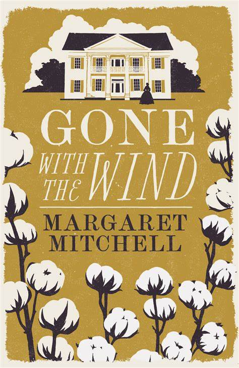

Gone with the Wind
Író: Margaret Mitchell Kiadás: 1936
Margaret Mitchell "Gone with the Wind" egy epikus regény az amerikai polgárháború idején. Scarlett O'Hara karaktere az északi és déli konfliktus közepette próbálja megőrizni déli birtokát, és közben keresi a szerelem és boldogság értelmét.
Margaret Mitchell

Foglalkozása: Író Született: 1900-1949
Margaret Mitchell az amerikai író, aki leginkább Az Eredetiben (Gone with the Wind) című regényéről ismert. A regény 1936-ban jelent meg, és azonnal hatalmas sikert aratott. A történet az amerikai polgárháború és az azt követő rekonstrukciós időszak idején játszódik, és a déli életmódot és kultúrát ábrázolja. Mitchell 1937-ben Pulitzer-díjat kapott a regényért.